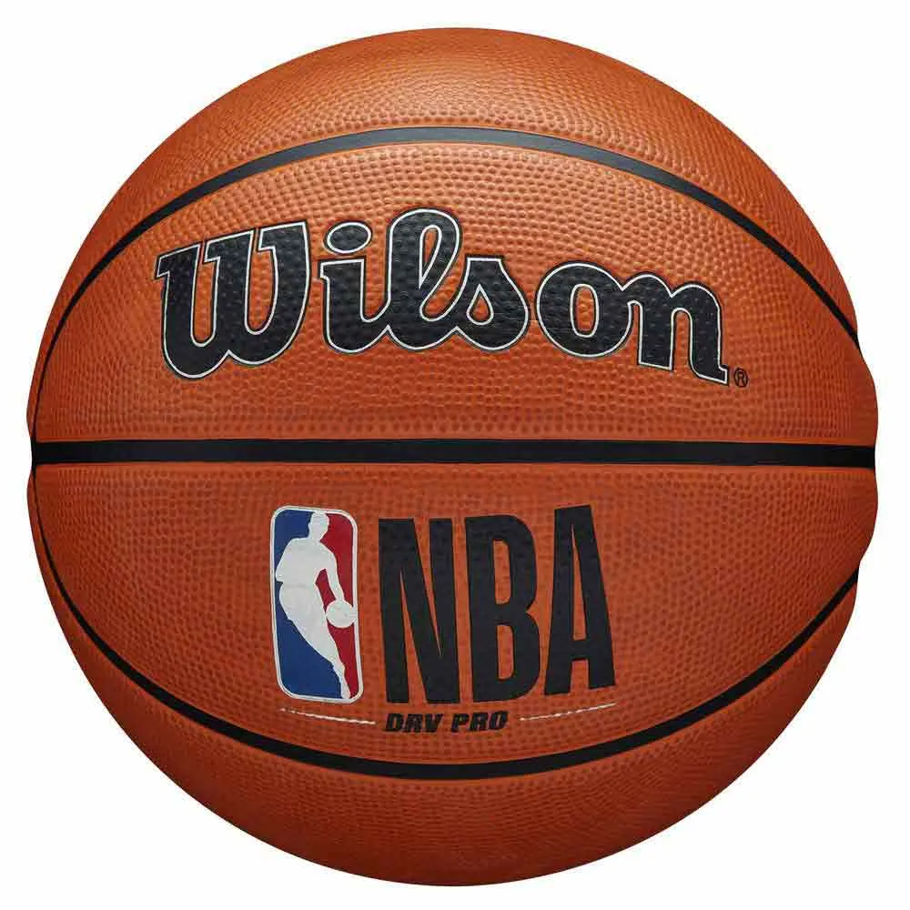

El 18 de junio de 2026, Nueva York vivió algo que llevaba 54 años esperando. Los New York Knicks, campeones de la NBA por primera vez desde 1973, desfilaron por el Canyon of Heroes ante una multitud estimada en dos millones de personas. La ciudad, que ya había celebrado el título la semana anterior en el Madison Square Garden, se volcó de una manera que hacía tiempo no se veía en las calles de Manhattan.
Jalen Brunson encabezó el desfile con el Trofeo Larry O'Brien en alto. Josh Hart, fiel a su reputación de personaje, llegó fumando un puro y con una camiseta que rezaba "BELIEVE THAT". OG Anunoby, Miles McBride y el resto de la plantilla recorrieron Broadway entre confeti y gritos que se escuchaban desde el río Hudson. El alcalde de Nueva York entregó las llaves de la ciudad a Brunson, quien en su discurso agradeció a los fans "haber esperado con paciencia más de cinco décadas".
El broche lo puso Alicia Keys, que ofreció una actuación improvisada en el City Hall con "New York State of Mind" de Jay-Z y el himno de la ciudad. Las imágenes dieron la vuelta al mundo. Las Finales 2026, disputadas contra los Minnesota Timberwolves en siete partidos, promediaron 20.6 millones de espectadores en Estados Unidos, el dato más alto desde las Finales de 2016.
Es el final de una era de sequía y el comienzo de algo nuevo en Nueva York. Los Knicks han vuelto, y la ciudad lo ha celebrado como merece.